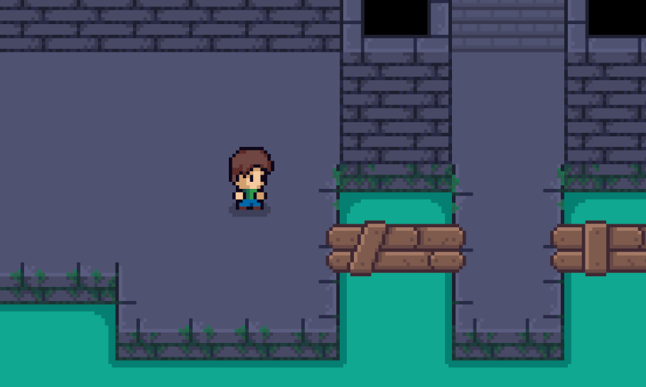

Should I apologize for the delay this time? How about on the next blog post in 2040? 😁
I've been a software engineer in industry for just shy of two years now, and I'm still living in Columbus. I really enjoy what I do and it's been a privilege to be able to work in a career where I get to create things. I am also finally in my last semester for my post-bacc in Computer Science at Oregon State University; at the time of this writing, I will be graduating in under a month.
One of the things I feel every day as a developer is this sense that I have no idea what I'm doing. Maybe that's something for me to sort out with my therapist, or maybe that's just how it is when you work in a field where things constantly change and you have to constantly adapt. I have gotten used to the feeling, so I can't really complain. And as hard as things might be sometimes, it's really cool to take a look back at where you've been to see how far you've come. This is my first time looking at the code for my site in just under two years, and it's really fascinating to look back.
I don't even know where to start. First, it's crazy to think that I could hand a series of Word documents of these blogposts to Claude and it could make this entire website in one prompt. I am also marvelling at the fact that I kept copying and pasting HTML documents for new blog posts over and over again, and each of my files has a whole slew of unused CSS classes. I'm also chuckling at the memory of how I used to copy and paste my entire project to save a new "version"... even though this entire project is in a git repository! I have been using GitHub Pages to host my website, but it never occurred to me that git is also (and primarily) version control.
But I'm not judging myself, it's just a step on the journey. I look back at this repo with fondness (and I even made this post "the old fashioned way" and just copied my latest blog post and changed the colors), and I intend to preserve it. Just because something is old or inefficient or clunky for it's time and place doesn't mean it's wrong. People still find value in old cars and video games amongst other things. And hey, this site still gets the job done, right?
Anywho, I've made a new 2D game. It is, once again, a dungeon crawler. I don't know why I've returned to this exact concept several times, but it's just the kind of game that speaks to me. I plan to keep working on this one, but this is the "v1" so to speak, and I wanted to get a version of it out there. Although it is quite simple, it feels more crisp and clean to me than my past games, and I hope to iterate on it as a fun side project. You can click below to play it now, or find it on the Portfolio tab.

I do have plans to make a new website, this one using a content-management system and a modern web framework. I want to do some more blogging there in the future. Stay tuned! Or don't, I don't think anyone reads this anyways. No worries, I still find it fun. 🤷
--Josh